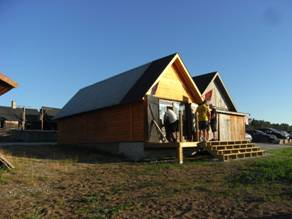
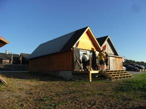

Succé för hamnens dag!
16-07-18Lördagen den 16 juli arrangerade föreningen Djupviks hamn i Eksta ”Hamnens dag” i Djupvik. Vårt arbete har med åren alltmer också inriktats på att alla besökare, även de som kommer landvägen skall trivas i det vackra hamnområdet. Nu bjöds det in till ”Hamnens dag”. På plats fanns sjöfartsverkets SAR-helikopter, Sjöräddningens båt Hwitstjärna, släckningsbil från räddningstjänsten i Klintehamn, russ från Gannarve och ett antal loppisförsäljare. Aktiviteten lockade ett stort antal besökare.
Uppskattningsvis 1000 besökare sökte sig under dagen till Djupvik. Intresset var stort för de besökande organisationerna som informerade och alla fick möjlighet att titta och ställa frågor. Barnen fick rida, de bjöds på bulle och dricka och många prövade lyckan i fiskdammen. Det fanns möjlighet att handla kaffe, korv, dricka och glass. Många dröjde sig kvar i hamnområdet och trivdes i det inledningsvis lite blåsiga men vackra vädret.

 
